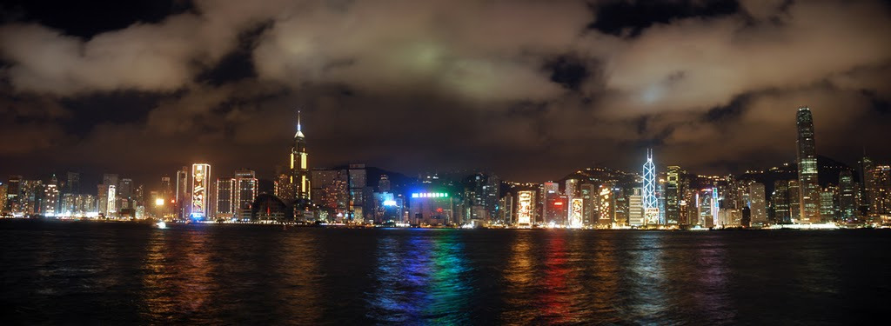

Tue, 16 Nov 2010 10:05:37 · Hong Kong · HK · China · Cloudy · Travel · City · Photography
cloudy night in hong kong china

Cloudy night in Hong Kong, China.
Tue, 16 Nov 2010 10:05:37 · Hong Kong · HK · China · Cloudy · Travel · City · Photography

Cloudy night in Hong Kong, China.